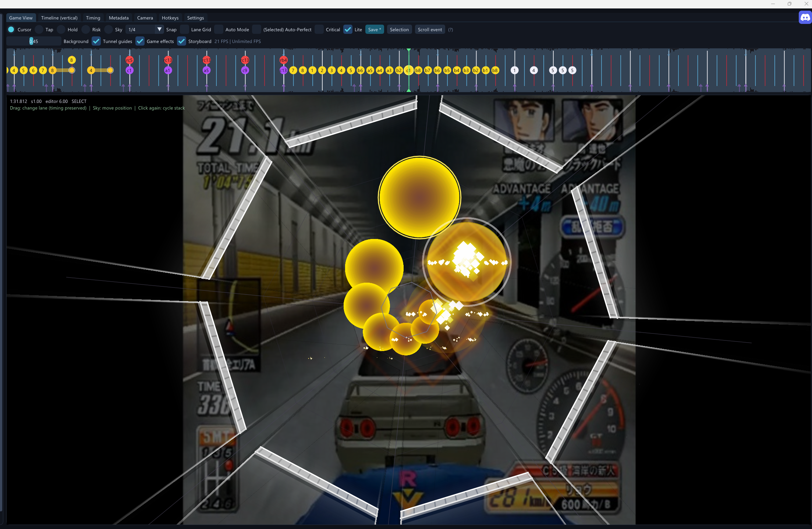

Notes & selection
Tap, Hold, Risk and Sky notes, with Lite and Critical styles. Copy, paste, mirror, undo/redo and assign Auto-Perfect to selected notes.
A community-made editor for custom Estella charts.
Edit notes in Game View, adjust timing on the waveform timeline, and preview camera and scroll events.
Windows and native Linux x86_64 · English / Türkçe

Tap, Hold, Risk and Sky notes, with Lite and Critical styles. Copy, paste, mirror, undo/redo and assign Auto-Perfect to selected notes.
Audio waveform, beat snapping, variable BPM and playback speed controls. Move notes between lanes without changing their timing.
Rotation, zoom/depth, scroll events and camera presets. Organize camera movements into groups.
Editable Game View with backgrounds and effects, optional Simple view, configurable hotkeys and an adjustable FPS limit.
Download the package for your system and extract the whole archive. Keep the included files together.
To share a chart, export the song as an .estellapack. Other users can load it with Import package.
No. This editor is developed by the community and is not affiliated with Imanity Co., Ltd.
No. You need your own Estella installation.
The Linux x86_64 editor runs natively. This does not include a Linux port of Estella itself. Direct Test in game is currently supported on Windows only.
Use the community Discord. Include what happened, your operating system and the editor version. The EstellaChartEditor.log file can help with troubleshooting.